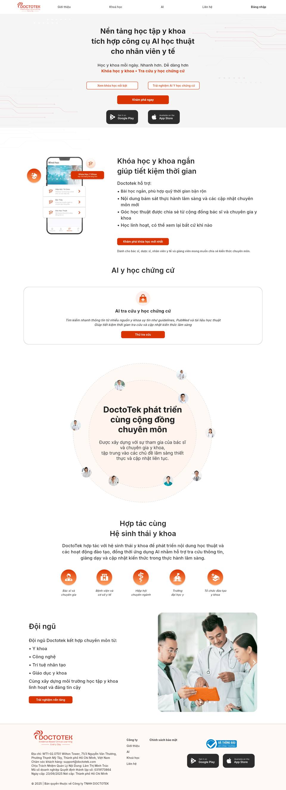
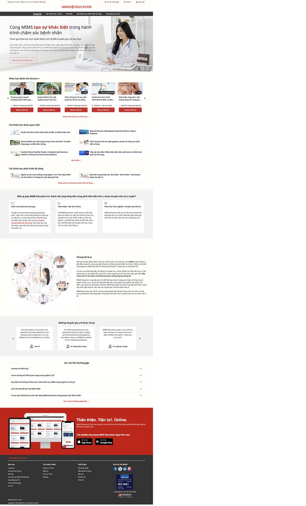
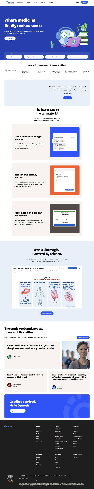
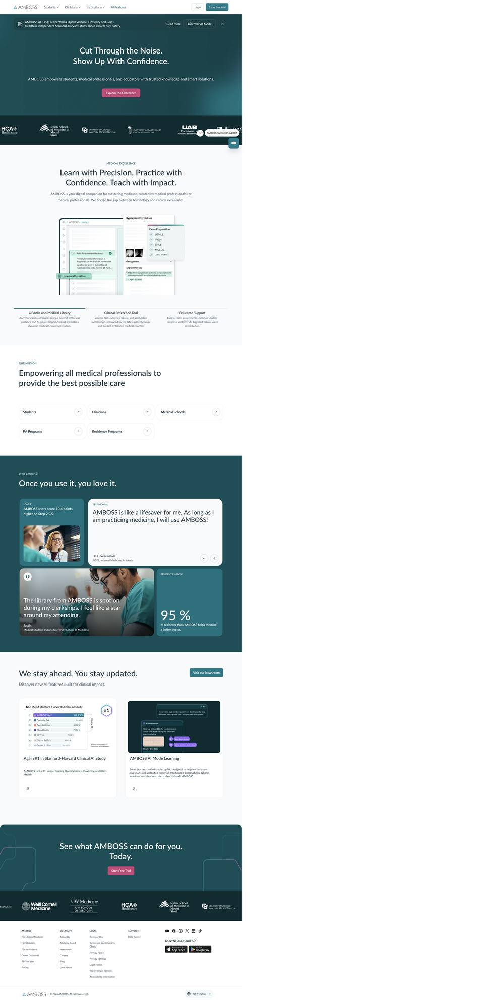
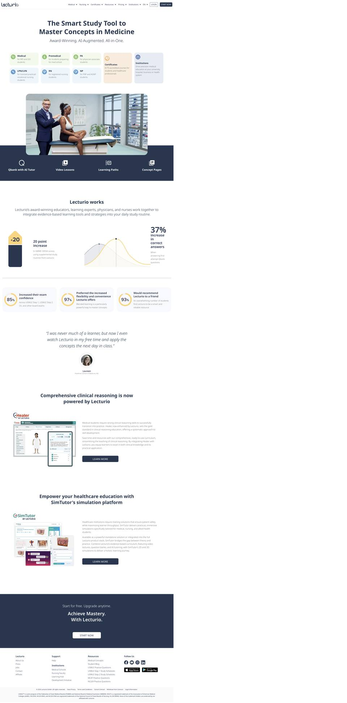
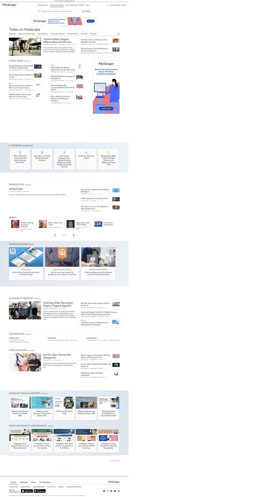
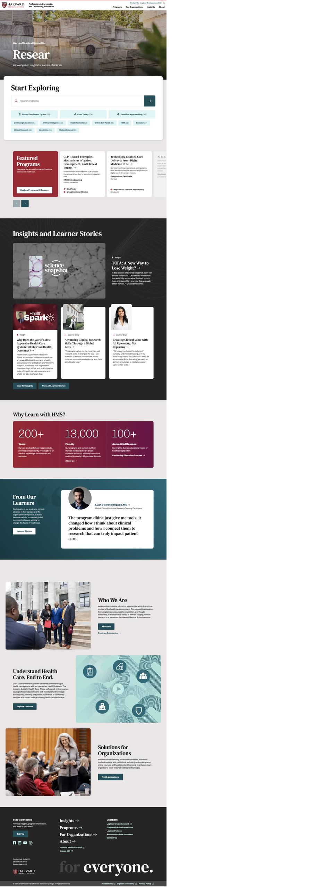
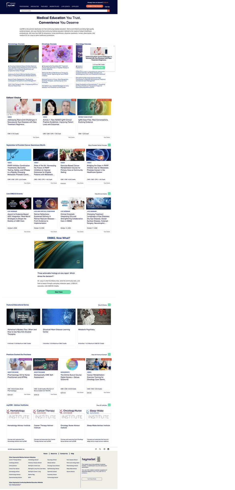
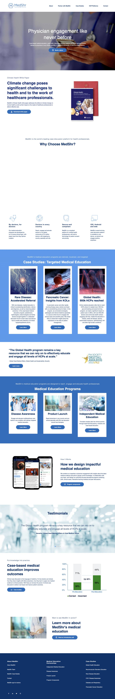

Ảnh chụp toàn trang chủ ngày 28/09/2026, khung 1440px. Chỉ lấy bố cục và cách tổ chức thông tin. Màu sắc, font và nhận diện vẫn giữ theo doctotek.com hiện tại. Cuộn trong từng khung ảnh để xem hết trang.
Mã màu đo trực tiếp từ pixel trên ảnh chụp doctotek.com, không lấy từ file theme trong code.
Quy tắc khi áp mẫu: màu xanh, teal hay navy của các trang dưới đây đều quy về cam #D93300 hoặc đen #2C2C2C; nền màu đậm quy về #F5F5F5 hoặc #FFF9F6. Họa tiết mạch điện đường mảnh ở hero DoctoTek là nhận diện riêng, nên giữ lại.


Làm mẫu cho thẻ khóa học và trang danh sách khóa học. FAQ về CME đặt trước footer. Dải tải app giữ tone cam thay vì đỏ.

Hero chỉ giữ một nút chính "Khám phá ngay". Thêm hàng lối tắt: Bác sĩ, Dược sĩ, Điều dưỡng, Giảng viên. Khối "Khóa học y khoa ngắn" đổi mockup minh họa sang ảnh chụp app thật.
Không lấy: nền xanh đậm toàn hero, nhân vật hoạt hình.

Khối "AI y học chứng cứ" hiện chỉ có 1 thẻ. Có thể đổi thành ảnh giao diện kèm tab cho các tính năng AI đang có: tra cứu EBM, soạn bài giảng, tóm tắt.
Không lấy: nền teal, nút hồng. Lúc chụp có popup cookie, đã tắt trước khi chụp.

Muốn giữ hero căn giữa thì thay 2 nút viền bằng 2 thẻ có icon: "Khóa học y khoa" và "AI y học chứng cứ". Thêm một dải icon cho 4 mảng: VOD, Livestream, CME, Tra cứu thuốc.

Dùng cho trang bài viết và tra cứu thuốc sau khi đăng nhập. Ô tìm kiếm có công tắc "AI" gộp được tra cứu thuốc và AI EBM đang có vào một chỗ nhập.
Không lấy: font serif cho tiêu đề tin, banner quảng cáo.

Khối tìm khóa học với chip chuyên khoa đặt ngay sau hero. Khối "Cộng đồng chuyên môn" thêm dải số liệu thật: số khóa học, số chuyên gia, số học viên.
Không lấy: nền đỏ đô, font serif lớn.

Chỉ lấy ý tưởng nhóm khóa học theo chuyên khoa cho trang "Khóa học". Phần hình thức trông cũ, không nên theo.

Hợp cho trang demo doanh nghiệp /corporate và khối "Hợp tác cùng hệ sinh thái": đổi 5 icon hiện có thành thẻ case study.
Trang dài, nhiều khoảng trắng. Chỉ nên lấy khối case study.
Giữ nguyên các khối nội dung DoctoTek đang có, chỉ đổi cách trình bày. Cột cuối ghi rõ khối nào cần thêm dữ liệu hoặc API. Plan hiện tại là làm giống bản cũ, nên các khối đó cần chốt trước khi đưa cho Cherry.
| Khối | Hiện tại | Đề xuất bố cục | Theo mẫu | Cần thêm gì |
|---|---|---|---|---|
| Hero | Căn giữa, 3 nút CTA | Giữ căn giữa và họa tiết mạch điện. 1 nút cam chính, 2 nút viền đổi thành 2 thẻ có icon | Lecturio, Osmosis | Không |
| Lối tắt đối tượng | Chưa có | Hàng 4 nút: Bác sĩ, Dược sĩ, Điều dưỡng, Giảng viên | Osmosis | Cần chốt mỗi nút dẫn tới trang nào |
| Tìm kiếm | Chưa có ở trang chủ | Ô tìm lớn có chip chuyên khoa, công tắc "AI" | Harvard, Medscape | Dùng API tìm kiếm có sẵn; công tắc AI dẫn sang AI EBM |
| Khóa học | Mockup + 4 gạch đầu dòng | Carousel thẻ khóa học thật: nhãn chuyên khoa, thời lượng, CME, nút đăng ký | MIMS VN | API danh sách khóa học công khai |
| AI y học chứng cứ | 1 thẻ chữ | Ảnh giao diện lớn kèm tab: tra cứu EBM, soạn bài giảng, tóm tắt | AMBOSS | Chỉ cần ảnh chụp app |
| Cộng đồng | Vòng tròn avatar | Giữ vòng avatar, thêm dải 3 số liệu | Harvard, AMBOSS | Số liệu thật từ DoctoTek |
| Hợp tác | 5 icon tròn | Hàng logo đối tác, hoặc thẻ case study | Osmosis, MedShr | Logo, cần xin phép đối tác |
| Đội ngũ | Chữ + ảnh | Giữ, thêm 2 đến 3 lời chứng thực của bác sĩ | Osmosis | Nội dung chứng thực |
| FAQ | Chưa có | Accordion câu hỏi về CME, chứng nhận, thanh toán | MIMS VN | Nội dung FAQ |
| Footer | Nền kem, store | Giữ, thêm dải tải app có mockup ngay phía trên | MIMS VN | Không |